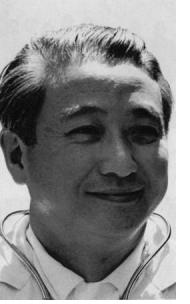
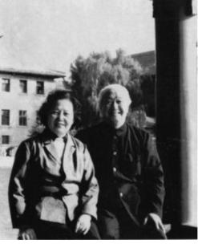

Sơ Lược Tiểu Sử Tác Giả

ác sĩ Lý Chí Thỏa, tốt nghiệp y khoa bác sĩ trường Đại Học Liên Hợp Tây –Trung, Thành Đô năm 1945, làm việc tại Sydney trước khi trở thành bác sĩ riêng cho Mao Trạch Đông 1954 cho đến khi Mao qua đời.

Bác sĩ Lý Chí Thỏa (1919-1995) – Ảnh: Giang Thanh, 1961
Từ năm 1980 đến 1988, trước khi định cư tại Hoa-Kỳ, bác sĩ Lý giữ chức vụ Phó chủ tịch Hội Y học Trung Hoa, Chủ tịch Hội Người Cao Tuổi Trung quốc, Tổng biên tập tạp chí Y học và Tự nhiên Trung quốc, Ban biên tập Tạp chí Hội y học Hoa Kỳ.

Bác sĩ Lý Chí Thỏa và vợ Ngô Lý Liên chụp bên Hồ Nam (Trung Nam Hải, Bắc Kinh). Căn hộ của họ ờ tầng 3, bao quát mặt hồ
Bác sĩ Lý sống ở Chicago từ năm 1988 cho đến khi tạ thế 1995.